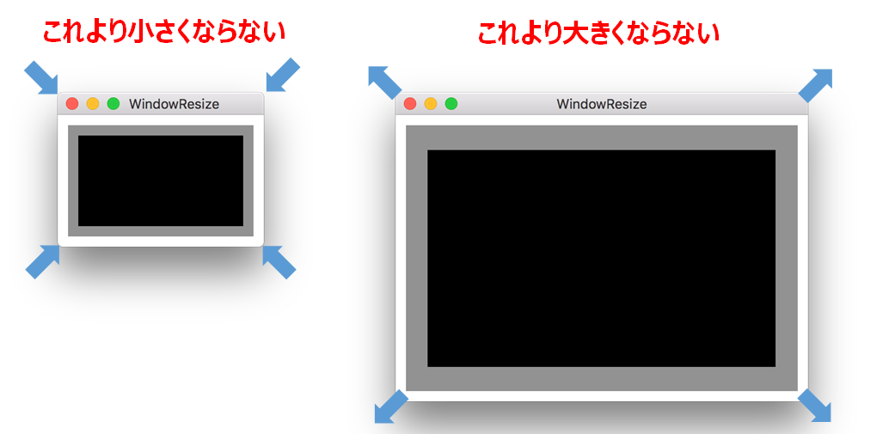

ウィンドウの大きさを特定の範囲におさめる
ユーザ操作によってウィンドウの大きさを変えるとき、特定の大きさの範囲でのみ変更可能とする

あるクラスがウィンドウのdelegateであれば、ウィンドウのサイズが変わったとき以下の NSWindowDelegateメソッドが起動する。この中に、ウィンドウのサイズを特定の大きさに制限する処理を記述する。引数に渡ってくるサイズはこれから変更しようとするサイズ、戻り値に異なったサイズを指定すると実際はそのサイズでウィンドウが表示される。
Swift
高さに関する注意
windowWillResizeメソッドの引数から得られるビューのサイズはメニューバーの高さを含んでいる。高さに関しては、これを織り込んで計算しなければいけない。メニューバーの高さは、ウィンドウに対応した全体のビュー（メニューバーを含む）の高さからコンテントビューの高さを引いた値となる。